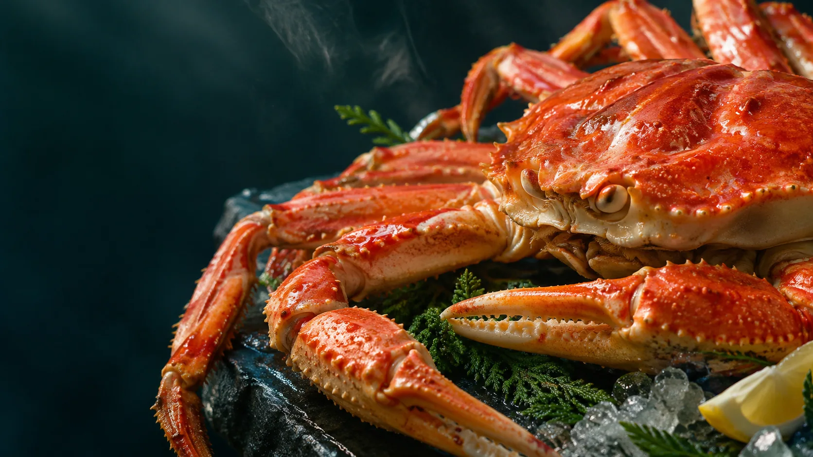

플레이스 정보 정비
사진·카테고리·키워드와 메뉴 정보 관리. ‘양양횟집’ 검색 노출 변화가 원안에 기록되어 있습니다.
 VISUAL CONCEPT · 실제 매장 음식 사진 아님
VISUAL CONCEPT · 실제 매장 음식 사진 아님다시 많은 일을 약속하기보다, 사람이 보고·고르고·주문하는 순간을 바꾸겠습니다.
양양을 찾은 손님이 검색을 시작해서 한 곳을 선택하기까지. 좋은 음식도 사진·메뉴·안내·주문 방법이 막히면 그다음 행동으로 이어지기 어렵습니다.
고객 행동의 설계 가설입니다. 실제 이탈·매출 수치로 단정하지 않습니다.

박규민 대표님 운영계획에 정리된 업무를 기반으로, 이번 시즌에는 진행 사실과 고객 반응을 연결하겠습니다.
사진·카테고리·키워드와 메뉴 정보 관리. ‘양양횟집’ 검색 노출 변화가 원안에 기록되어 있습니다.
기획·편집·게시물 운영 이력. 이후에는 조회뿐 아니라 저장·이동·주문 반응까지 점검합니다.
검색광고를 이어오되 광고비·클릭과 실제 매장 문의 행동을 구분해 확인합니다.
대게·회·물회와 여행 상황을 반영한 콘텐츠를 기획했습니다. 실제 판매 연계는 검증이 필요합니다.
기존 사실의 범위 · 2026.11.19 내부 운영계획 기준. 현재 순위, 게시물 발행 증빙 및 매출 상승 효과는 별도 대조 대상입니다.
셋 다 중요하지만 우선순위는 하나여야 합니다. 통화 중 눌러보면 이번 시즌의 제안 방향이 바뀝니다.
첫 사진과 메뉴, 위치 안내를 정리해 검색 후 방문을 선택하는 과정을 점검합니다.
원가를 늘리는 무제한 추가 서비스가 아닙니다. 기존 계약 의무를 확인한 뒤, 반복 발행 리소스 일부를 더 직접적인 고객 행동에 재배치하는 방식입니다.
키워드·후기형 글을 반복 발행
선별된 블로그 글 + 메뉴·가격·주문 FAQ
제작 이후 채널별 연결 약함
인스타 릴스 + 네이버 클립 + 플레이스 연결 검토
가게가 하고 싶은 말 중심
고객 동의 기반 사진·클립, 자주 묻는 질문, 실사용 장면
발행·노출 작업의 목록
저장·길찾기·전화·주문 문의와 후속 개선
이번 시즌에는 ‘어떤 키워드를 많이 쓸까’보다 ‘어떤 장면에서 저장하고 찾아올까’를 먼저 묻습니다.
네이버 클립의 장소 태그·검색 노출 가능성을 활용하되, 계정 권한 및 게시 가능 기능은 실제 확인 후 적용합니다. 촬영·발행량은 계약 협의 항목입니다.
 촬영 콘티 예시 · 실제 영상 아님
촬영 콘티 예시 · 실제 영상 아님첫 2초: 대게 클로즈업 → 매장 메뉴 → 방문 안내
한 장면을 채널별 목적에 맞춰 편집하는 제작 구조
찾아오고, 비교하고, 결정하는 순간에 실제 도움이 되는 기능을 연결합니다. 아래 화면은 상용 기능이 아닌 제안용 인터랙션 시안입니다.
가격·양·구성을 한눈에 확인하고 전화 문의로 연결하는 화면을 설계합니다.
메뉴 구성·판매가·추가 옵션과 주문 접수 방식은 매장 승인 후 확정. 가상 주문이나 허위 가격은 표시하지 않습니다.
더 많이 하겠다는 말보다, 무엇을 완료했고 어떤 반응이 있었으며 다음 주에 무엇을 바꾸는지를 남기겠습니다.
기존 계약·실행 내역·메뉴 정보 대조, 현황 지표 확인
첫 사진·숏폼 콘티·포장/메뉴·정보 동선 정비
광고 문구·콘텐츠·주문 경로를 작은 실험으로 보완
수행·유입·문의·확인된 주문 반응을 분리해 보고
주간 공유 · 월간 리뷰 · 시즌 평가
매출 상승은 보장할 수 없습니다. 추적 가능한 지표와 실제 매출을 구분하며, 매장 측 POS·주문 기록 협조 여부에 따라 확인 범위가 달라집니다.
이번 시즌의 우선순위, 월별 제공 범위, 기존 계약의 남은 약속을 함께 확인한 뒤 시작하겠습니다.
기존 계약 이행·남은 의무 / 월별 발행량 재배치 / 촬영·제작·광고·포장 실물비의 경계 / 보고 담당자와 일정
본 자료는 2026.11 운영계획 기반의 제안 초안입니다. 기존 금액·일정 및 제작 제공량은 계약서를 확인해야 하며, 성과 수치·노출·매출 증대를 보장하지 않습니다. 연출 이미지는 실사진으로 대체 전 공개 홍보 소재로 사용할 수 없습니다.